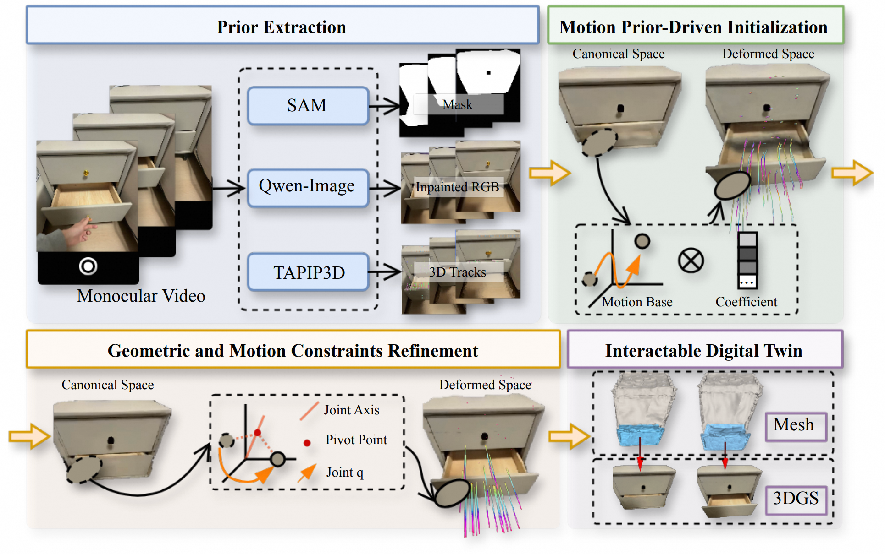
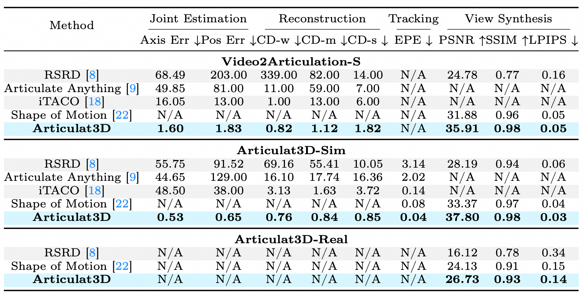
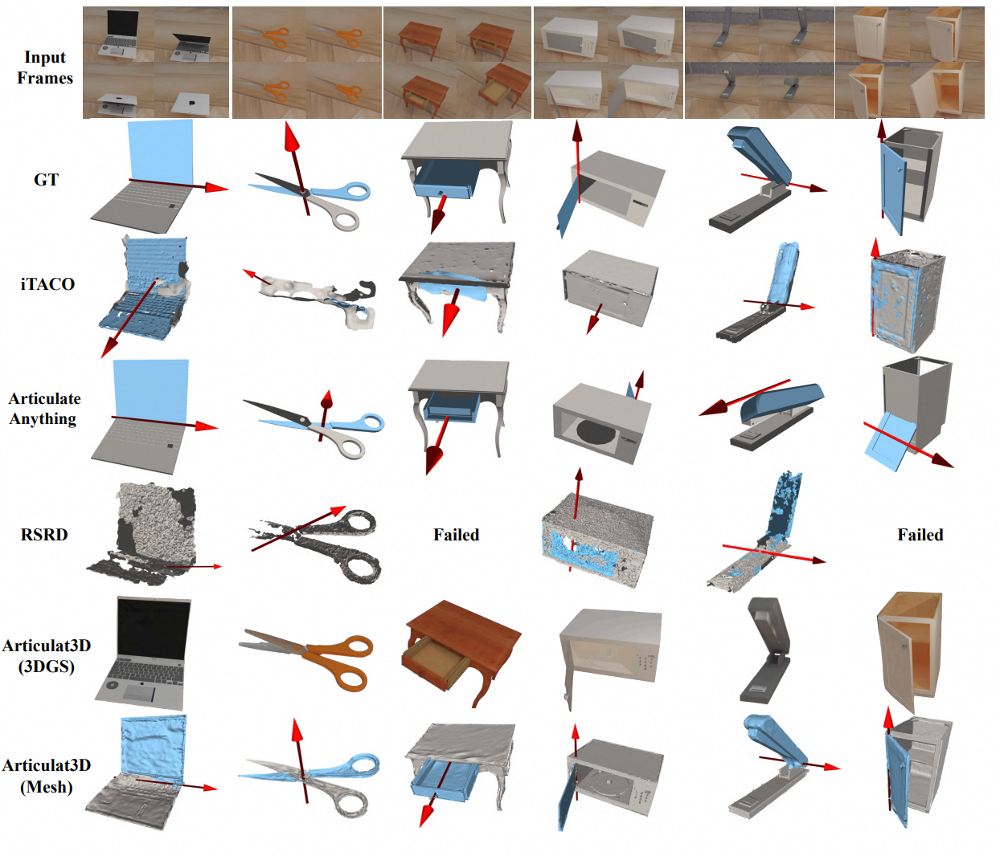
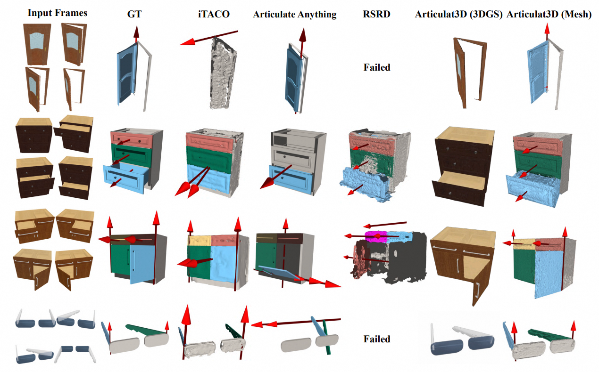
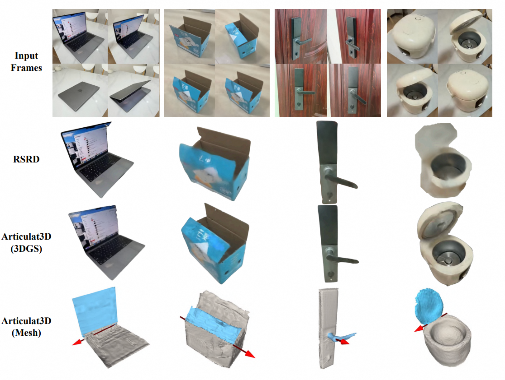

Building high-fidelity digital twins of articulated objects from visual data remains a central challenge. Existing approaches depend on multi-view captures of the object in discrete, static states, which severely constrains their real-world scalability. In this paper, we introduce Articulat3D, a novel framework that constructs such digital twins from casually captured monocular videos by jointly enforcing explicit 3D geometric and motion constraints. We first propose Motion Prior–Driven Initialization, which leverages 3D point tracks to exploit the low-dimensional structure of articulated motion. By modeling scene dynamics with a compact set of motion bases, we facilitate soft decomposition of the scene into multiple rigidly-moving groups. Building on this initialization, we introduce Geometric and Motion Constraints Refinement, which enforces physically plausible articulation through learnable kinematic primitives parameterized by a joint axis, a pivot point, and per-frame motion scalars, yielding reconstructions that are both geometrically accurate and temporally coherent. Extensive experiments demonstrate that Articulat3D achieves state-of-the-art performance on synthetic benchmarks and real-world casually captured monocular videos, advancing the feasibility of digital twin creation under real-world conditions.

Our method consistently achieves state-of-the-art (SOTA) performance across all datasets and evaluation metrics.




@article{guo2026articulat3d,
title={Articulat3D: Reconstructing Articulated Digital Twins From Monocular Videos with Geometric and Motion Constraints},
author={Guo, Lijun and Zhao, Haoyu and Zhao, Xingyue and Fu, Rong and Zhuang, Linghao and Huang, Siteng and Li, Zhongyu and Zou, Hua},
journal={arXiv preprint arXiv:2603.11606},
year={2026}
}